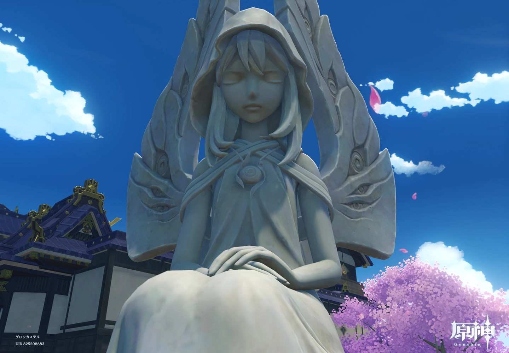
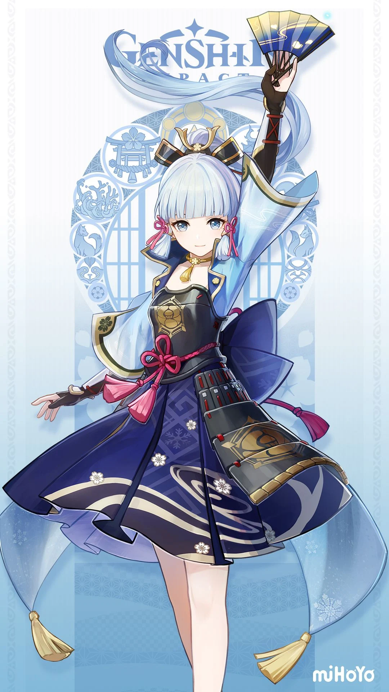
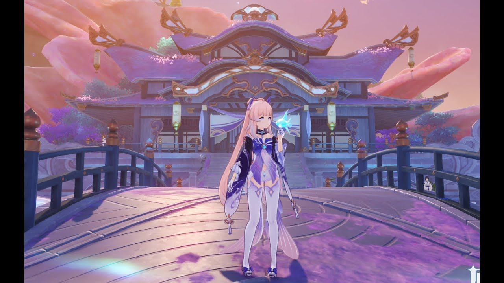
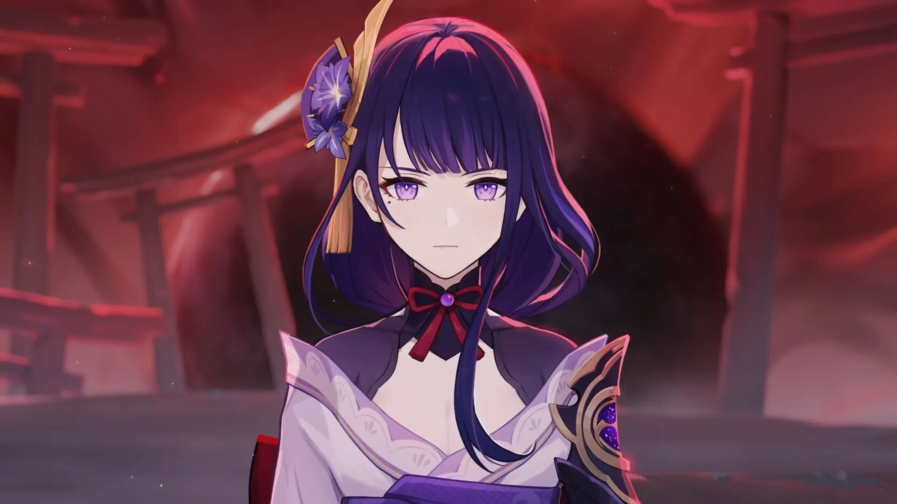
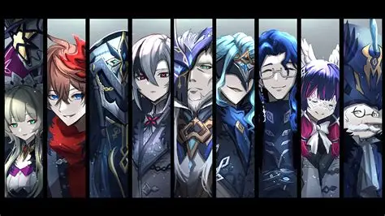
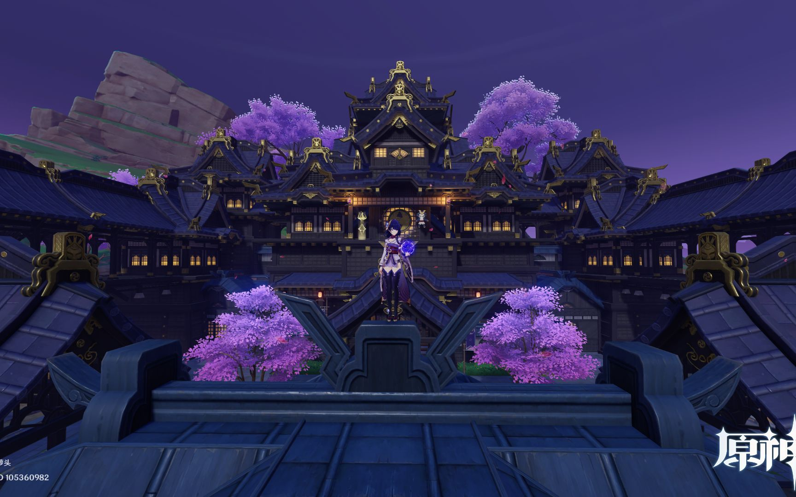
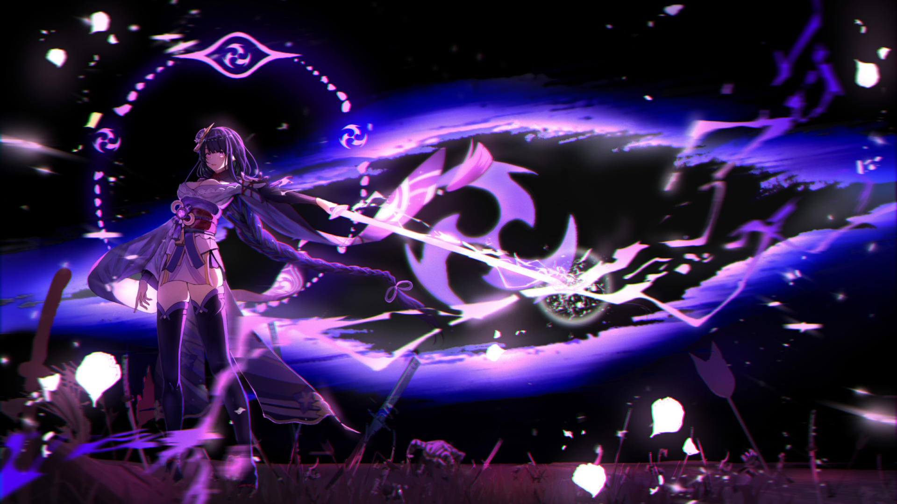
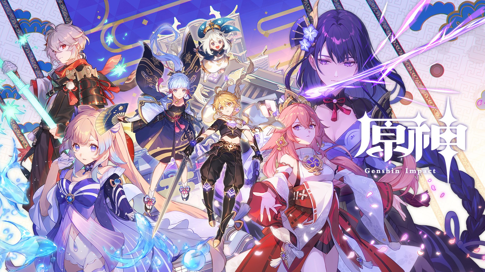

| Historia |
|---|
1.Llegada a Inazuma y el Decreto de Visiones El Viajero llega a Inazuma y descubre que la nación está aislada del mundo exterior por orden de la Shogun Raiden. La Shogun ha impuesto el Decreto de Caza de Visiones, confiscando las Visiones de los ciudadanos y provocando miedo y descontento. El Viajero conoce a Thoma, quien lo ayuda a entrar legalmente al país. |
2.Encuentro con la Comisión Kamisato El Viajero conoce a Ayaka, heredera de la Comisión Yashiro. Ella explica que la Shogun ha cambiado drásticamente y que el pueblo sufre bajo sus decretos. Ayaka pide ayuda al Viajero para contactar a los rebeldes de la Isla Yashiori. |
3. La Resistencia de Sangonomiya El Viajero viaja a la Isla Watatsumi y conoce a Kokomi, líder de la resistencia. La guerra entre la Shogun y la resistencia está en un punto crítico. El Viajero ayuda en varias misiones para apoyar a los rebeldes y entender la situación política. |
4. El misterio de la Shogun Raiden El Viajero descubre que la Shogun que gobierna no es la verdadera Ei, sino una marioneta mecánica llamada Shogun Raiden. La verdadera Arconte Electro, Ei, se ha encerrado en su plano interior para perseguir su ideal de “Eternidad”. |
5.El plan de los Fatui Los Fatui manipulan el conflicto desde las sombras. La General Sara y las fuerzas de la Shogun luchan contra la resistencia, mientras los Fatui alimentan la guerra para debilitar a Inazuma. El Viajero descubre que los Fatui están involucrados en la creación de Delusions que dañan a los soldados. |
6. El duelo contra la Shogun Ayaka y Thoma ayudan al Viajero a llegar al Castillo Tenshukaku. Allí, el Viajero se enfrenta directamente a la Shogun Raiden. Aunque no logra derrotarla por completo, consigue llamar la atención de Ei dentro del plano interior. |
7. Encuentro con Ei en el Plano de la Eternidad El Viajero entra al plano interior de Ei. Ella explica su miedo al cambio y su deseo de detener el paso del tiempo para proteger Inazuma. El Viajero la desafía, demostrando que la Eternidad no puede lograrse deteniendo el mundo. |
8.Fin del Decreto de Caza de Visiones.png)
Tras el enfrentamiento, Ei comprende que su ideal estaba dañando a su pueblo. Decide abolir el Decreto de Caza de Visiones y recuperar el control de Inazuma sin la influencia de los Fatui. La nación comienza a sanar lentamente. |
9. Robo de la Gnosis Electro.jpg)
Mientras Ei intenta reparar los daños, aparece La Signora, enviada de la Tsaritsa. Ella desafía al Viajero y es derrotada. Sin embargo, la Shogun Raiden (la marioneta) ejecuta a La Signora por orden de Ei. Más tarde, Scaramouche roba la Gnosis Electro y desaparece. |
10. Conclusión del arco de Inazuma Ei acepta que la Eternidad debe adaptarse al cambio. Agradece al Viajero por abrirle los ojos. El Viajero recibe nuevas pistas sobre su hermano/a y se prepara para viajar a Sumeru. |
.png)
.png)
.png)
.jpg)
.png)